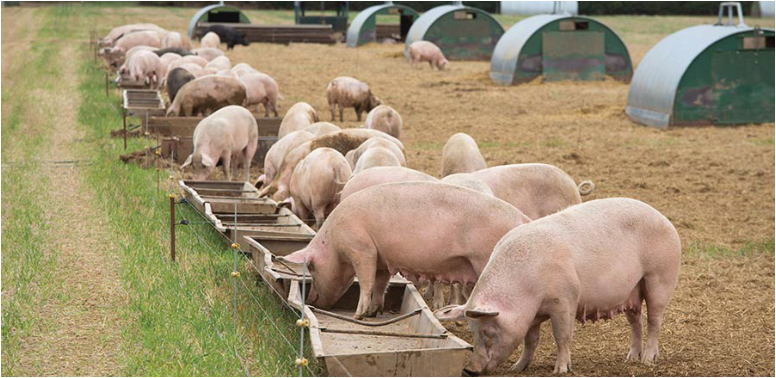

Agriculture for Secondary Schools
natural forage like grasses, roots, and insects. Usually, they are supplemented
with little feed. This system is often low-cost and requires minimal infrastructure.
However, it is prone to diseases, parasites and predators and is not recommended
as it also results in low productivity.
Figure 7.2: pigs kept under an extensive farming system.
Source: https://www.thepigsite.com/articles/characterising-outdoor-pig-production-in-europe
(b) Semi-intensive pig farming
This farming system combines indoor and outdoor management (Figure 7.3).
Pigs are provided with shelter but also have access to outdoor areas. Farmers
have more control over feeding and health management than extensive systems.
Figure 7.3: The semi-intensive pig farming system; sows feeding in troughs in a fenced unit.
Source: https://www.fwi.co.uk/livestock/pigs/11-ways-pig-farmers-can-aim-for-net-zero
111
Student’s Book Form Two